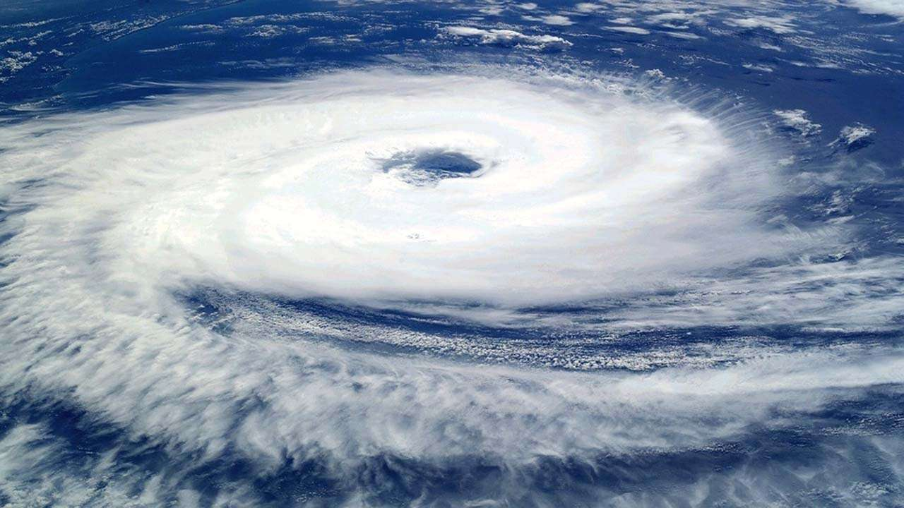
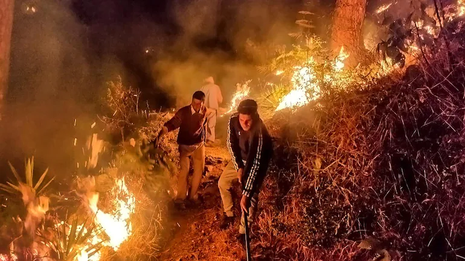

NEWS
CORONA VIRUS RELIEF

CORONA VIRUS RELIEF

CYCLONE YAAS RELIEF

DONATE FOR A GOOD CAUSE
Nonprofits around the world apply and join KAAD to access more funding, to build new skills, and to make important connections.
Nonprofits around the world apply and join KAAD to access more funding, to build new skills, and to make important connections.
Generous companies and their employees further support high-impact projects with donations and grants, helping local communities thrive.
CORONA VIRUS RELIEF